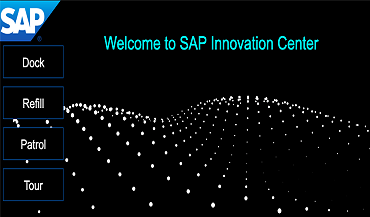
A hybrid mobile application mounted in a robot which served as a concierge/server at SAP Leonardo Center Singapore opening. The robot patrols the entire area. Visitors can get drink from the compartment or ask the robot to take them to a specific exhibition booth.
Technologies used: Node.js, Cordova, SocketIO
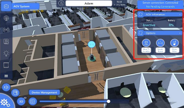
An application for Singapore GovTech which served as a server in the office. Every morning, employees can use their mobile app to order drinks. Once all the orders have been accepted, the robot will dispatch to each cubicle to deliver drink.
For this application, I only handled the back end while a partner designed and built the mobile application using Unity.
Technologies used: Node.js, SocketIO, Cordova, MySQL
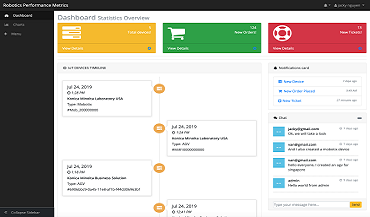
A dashboard for Murata to have an overview how their MiR robots perform. Once the robot is on a mission, it will broadcast its location in realtime and the administrators will be able to view the heatmap. The administrators can also communicate with others via chat messages.
Technologies used: Spring Boot, Stompjs, Angular, MySQL, Node.js
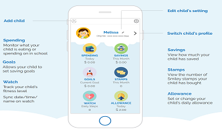
A mobile application for parents to set allowance for their children at school. This application integrates with the DBS Bank and the Network for Electronic Transfers (NETS) to handle the One Time Pin (OTP) and money transfer. At the end of the day, the parents can view children steps, meal purchased, …
The app is available for donwload on Android and iOS
Technologies used: Node.js, AngularJS, MongoDB, Redis, SQL Server
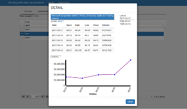
A toying web application for me to learn D3.JS.
This application to call Quandl REST API to get end of day US stock price and display different charts, e.g.Open, Low, High, Volume,...
Also, this application to call IUCN REST API to get data about threaten/endangered species.
Technologies used: AngularJS, D3.js
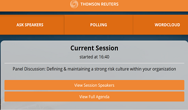
An application for Thomson Reuters annual summit. This application to let attendants participate into the live event, e.g viewing current session, submit questions to the panel, play a word cloud or submit a poll.
Technologies used: Node.JS, AngularJS, MongoDB, Firebase and Google Analytics
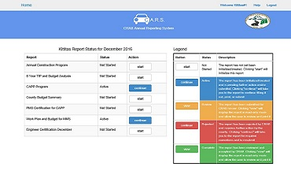
A web application for 39 counties to submit various reports four times a year. CRAB management staff will review and approve the county reports through this system.
Technologies used: ASP.Net WebAPI, AngularJS, SQL Server
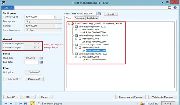
Volume Slicing
In standard MECOMS™, it’s possible to set different tariffs based on the consumption volume. For Hitachi, it’s necessary to set different tariffs based on the amount of hours.
Technologies used: Dynamics AX 2012, SQL Server
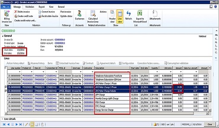
Advance Metering Infrastructure
Advanced Metering Infrastructure (AMI) charge is the monthly meter charges applicable only to contestable customers who have AMI meters installed at their premises as a recurring market support service charges.
Technologies used: Dynamics AX 2012, Axapta, SQL Server
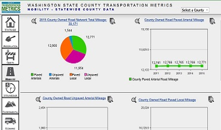
A graphical web-based dashboard of county transportation performance measures.
Technologies used: ColdFusion, SQL Server, HTML5, CSS3, jQuery
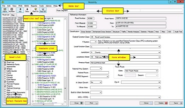
Mobility
An inventory management system for county road infrastructures: horizontal curves, vertical curves, clear zone segment, etc.
Technologies used: .Net, ADO.Net data service, SQL Server, GIS
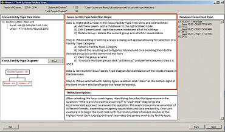
Systemic Safety Project Selection Tool
Provides a step by step process for conducting systemic safety analysis; analytical techniques for determining a reasonable balance between the implementation of spot safety improvements and systemic safety improvements, and a mechanism for quantifying the benefits of safety improvements implemented through a systemic approach.
Technologies used: .Net, ADO.Net data service, SQL Server

{kind=link}
{kind=link}
{kind=link}
{kind=link}
{kind=link}
{kind=link}
{kind=link}
{kind=link}
{kind=link}
{kind=link}
{kind=link}
{kind=link}